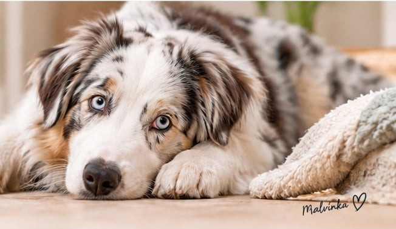

[DOPLNIT] Příběh Malvínky od Terezy: odkud přišla, jaký má hendikep, jak se učila orientovat, co ji baví, jak se stala maskotem projektu. Ideálně 3 až 5 odstavců + 2 až 3 fotky.
Co nás Malvínka naučila
Že hendikep je hlavně v hlavách lidí. Pes, který nevidí, pozná náladu v místnosti dřív než my. Pes, který neslyší, čte z gest přesněji než kdokoliv jiný.
Podpořit SensiHome PAW